15 de abril de 2025. Jalisco, México. English version
En los últimos años, los smartphones se han convertido en parte de la vida diaria de millones de personas al rededor del mundo; desde comunicarse, realizar operaciones financieras, comprar boletos de avión, redes sociales y más, nos hacen permanecer más tiempo mirando a una pantalla, lo cual resulta cansado, es por ello que un "Dumb Phone" podría hacer la diferencia para algunas personas.
Con esto en mente, hace más de un año me decidí que era el momento correcto para pasar por el proceso de preparar lo necesario para tener un "Dumb Phone", para, de cierto modo, tener una desintoxicación digital. Conociendo un poco las ventajas y desventajas de un compromiso como este, me dediqué de lleno a este proyecto, y finalmente tengo la oportunidad de compartir mis resultados.
"Dumb Phone" es una terminología inglesa que se utiliza para referirse a teléfonos con funcionalidad limitada, enfocándose más en ofrecer una experiencia simple, sin distracciones y solo con las funciones necesarias*.
Decir necesarias es una exageración, en las próximas secciones se hablará sobre definir lo que realmente podría necesitar día con día.
El propósito de este artículo es ofrecer al lector, mi interpretación del "Dumb Phone". Yo apliqué estos pasos en mi dispositivo, sintiéndome cómodo con las limitaciones que definí desde el inicio. Quizás algunas cosas que funcionan para mí, podrían no funcionar para otros. Espero que en alguno de estos puntos pueda encontrar algo de valor para implementarlo en su dispositivo si decide inclinarse por el camino del "Dumb Phone".
Hoy en día, se pueden encontrar un sinfín de dispositivos interesantes. Entre esos miles de dispositivos se incluyen los teléfonos antiguos, los smartphones, desde el iPhone hasta una gran variedad de dispositivos Android y dispositivos cuidadosamente diseñados para ofrecer un verdadero "Dumb Phone", desde el software y el hardware.
Mantener solo las aplicaciones que realmente utilizará le ayudará a mantenerse enfocado en las cosas que importan, reduciendo las posibilidades de tener alguna motivación de usar el teléfono más allá de los objetivos a definir a partir de ahora.
Mi teléfono lo utilizo principalmente para enviar mensajes por WhatsApp, escuchar música, revisar mi correo de vez en cuando y hacer alguna que otra llamada, nada fuera de lo ordinario para algún teléfono antiguo, pero el mayor problema que enfrentan las personas que deciden seguir el camino del "Dumb Phone" es la falta de la capacidad de instalar aplicaciones de terceros como lo son aplicaciones bancarias o autenticador en dos pasos, que si bien, no son utilizadas frecuentemente, es mejor tenerlas a mano para esas pequeñas ocasiones específicas, que no tenerlas del todo.
Una cosa que decidí desde el principio es que no quiero tener instalada ninguna red social, pero seguiré revisando mis redes sociales en mi laptop un par de veces al año. Esto puede parecer algo extremo para algunas personas, pero es aquí donde cada persona puede tomar de este artículo aquello que le sea de mayor utilidad para alcanzar la meta deseada.
| 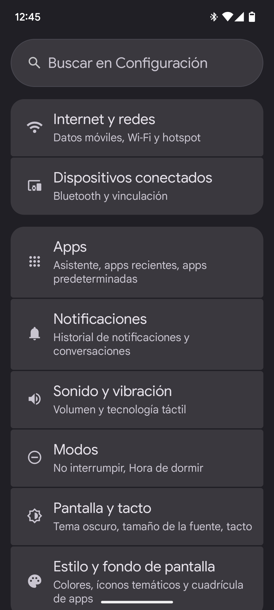 | 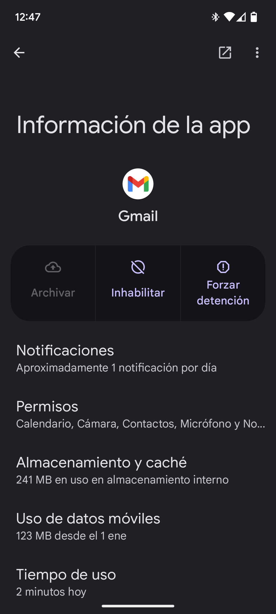 | 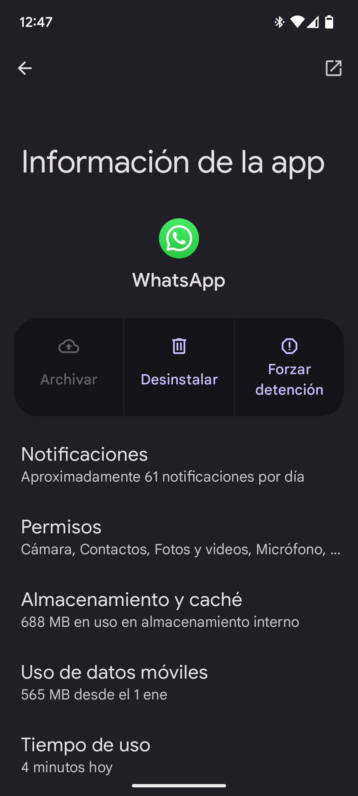 |
|---|---|---|
| En las configuraciones del sistema, se encuentra la sección de aplicaciones, donde puede revisar todas las aplicaciones instaladas en el teléfono. | Las aplicaciones del sistema, son aplicaciones que son preinstaladas de fábrica en el teléfono y no pueden ser eliminadas; sin embargo, pueden ser deshabilitadas, lo que permite que no sean utilizadas y sean ocultadas del cajón de aplicaciones. | Las aplicaciones de terceros, como WhatsApp, pueden ser eliminadas por completo; en caso de que se llegue a necesitarla en un futuro, las aplicaciones de terceros pueden ser fácilmente reinstaladas desde la tienda de aplicaciones. |
Eliminar por completo las redes sociales puede no ser una opción para todos; por ello, otra opción viable y menos drástica es utilizar un temporizador. La gran mayoría de teléfonos cuentan con una sección para el Bienestar Digital, donde puede seleccionar un límite diario por aplicación, para que una vez terminado ese tiempo, la aplicación se deshabilite automáticamente hasta el día siguiente. Otra función dentro del Bienestar Digital que es bastante útil es el "Modo Dormir", la cual cambia automáticamente el perfil de sonidos a No Molestar, desactiva las notificaciones en la barra de estado y la pantalla de bloqueo y cambia los colores de la pantalla a escala de grises.
| 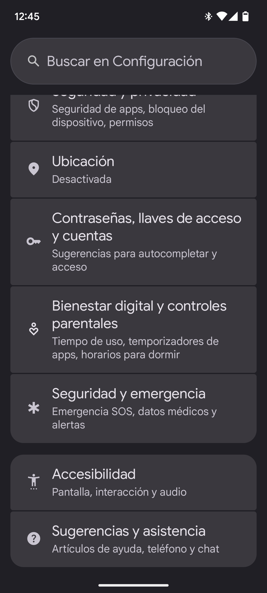 | 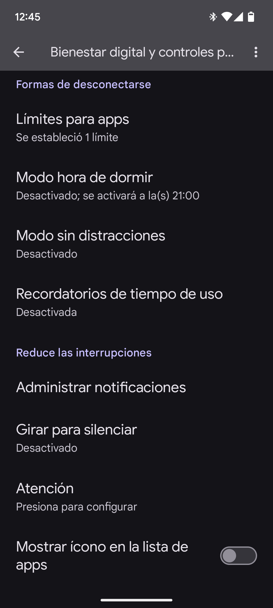 | 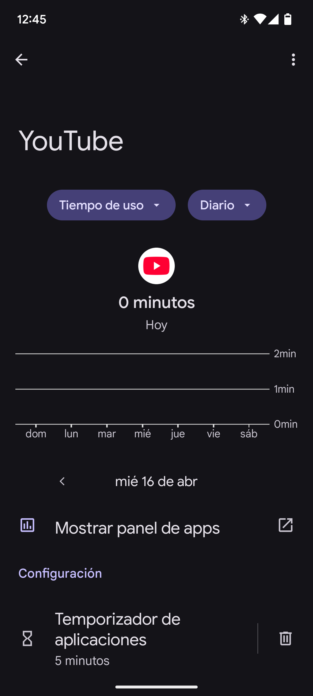 |
|---|---|---|
| En las configuraciones del sistema, se encuentra la sección de Bienestar Digital | Dentro de la sección de Bienestar Digital, puede definir el tiempo límite de cada aplicación de forma individual, y otra serie de opciones que podrían tener un impacto positivo. | Cada aplicación muestra los detalles de cuánto tiempo se ha estado usando la aplicación. Otras marcas de teléfonos o con otros sistemas operativos pueden variar ligeramente. |
La pantalla de inicio, algunas veces también llamada launcher, es la vista principal del teléfono, donde todas las aplicaciones son mostradas, un fondo de pantalla y algunos widgets para mostrar información rápida, como el clima, la batería de los dispositivos Bluetooth o la música que se esté reproduciendo.
El launcher default del Google Pixel, es lo que muchos catalogarían como el launcher perfecto, con una barra de aplicaciones en la parte inferior, una serie de "páginas" donde se pueden organizar las aplicaciones y los widgets a voluntad y el cajón de aplicaciones, donde residen todas las aplicaciones instaladas en el teléfono. Mantener las cosas sencillas en un launcher tradicional puede ser algo complejo, por ello existen launchers alternativos.
Después de probar distintos launchers, finalmente me decanté por OLauncher, un launcher minimalista que provee simplicidad y un toque discreto. Cuenta con funciones básicas para la personalización como lo son, el cambiar el tamaño de la fuente, elegir qué aplicaciones se muestran en la pantalla principal, decidir entre tema claro u obscuro y más. Es por ello, que para mí, es el launcher perfecto para este proyecto.
| 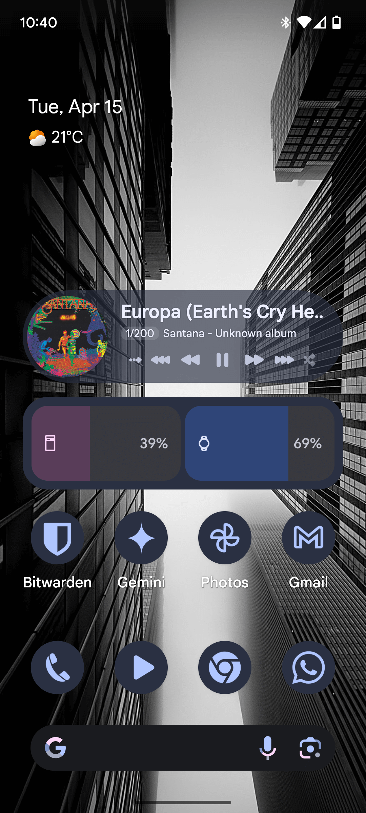 | 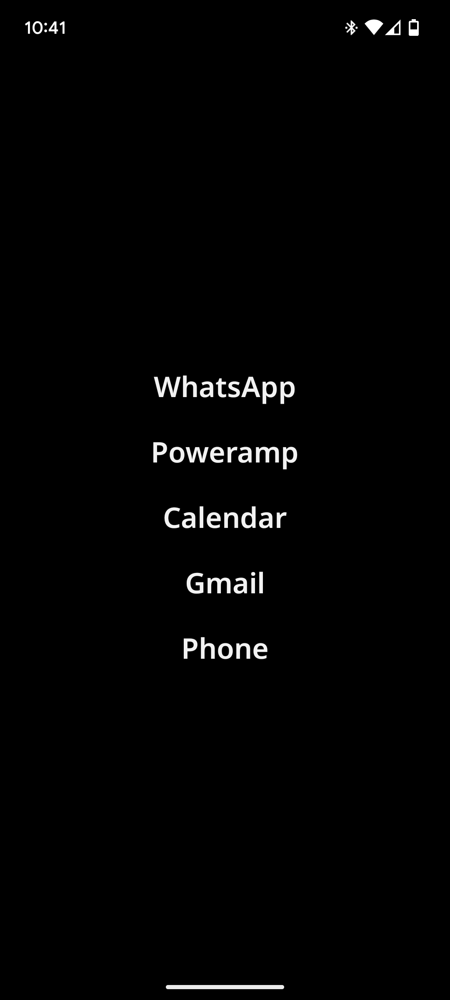 |
|---|---|
| El launcher default para el Google Pixel incluye una barra de búsqueda en el fondo, un dock para aplicaciones y, en este caso, una página con varios iconos y widgets. | Esta es mi configuración actual de Olauncher, con 5 aplicaciones, las cuales son las que utilizo día a día, un fondo de pantalla completamente obscuro para aprovechar al máximo el contraste de la pantalla AMOLED y la barra de estado, para ver la hora y el estado de la red y la batería restante. |
Existen una gran cantidad de estudios que muestran cómo los colores afectan a los humanos, hacer sentir cierta emoción, influenciar la toma de decisiones y la percepción de algunos objetos. Hacer la transición de una pantalla a todo color a una pantalla a blanco y negro (o escala de grises) ayuda a reducir la fatiga y el estímulo de estar revisando fotografías y videos en redes sociales, artículos o noticias. En caso de que sea necesario volver a activar los colores de la pantalla, por ejemplo, al momento de tomar una fotografía, se puede activar un acceso directo en las configuraciones rápidas en la barra de estado para cambiar el modo de color fácilmente.
| 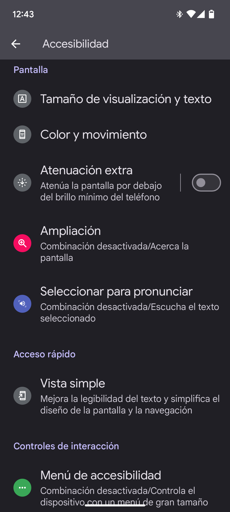 | 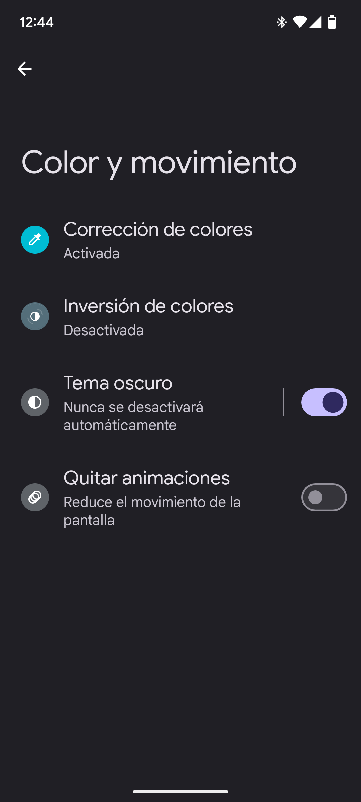 | 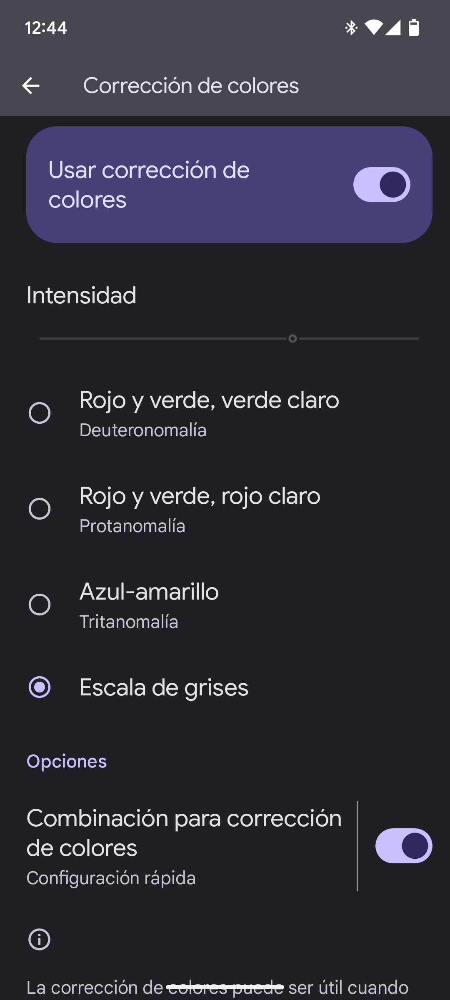 | |
|---|---|---|---|
| En las configuraciones del sistema, se encuentran las opciones de accesibilidad. | En las opciones de accesibilidad, se pueden encontrar una gran variedad de opciones, pero nos enfocaremos en las opciones de color. | Dentro de la sección de color, se puede seleccionar el modo obscuro y la corrección de color, una opción que permite al sistema operativo el cambiar cómo los colores son vistos en la pantalla, pero no cambia los colores de las capturas de pantalla o las fotos tomadas con la cámara. | La corrección de color incluye formas de adaptar los colores de la pantalla para ajustarse a personas con alguna discapacidad visual. En nuestro caso, la escala de grises, convierte la mayoría de elementos a colores blanco y negro. |
Otra cosa que realmente ayuda a reducir las razones por las cuales utilizar el teléfono, es la desactivación de las notificaciones innecesarias, por esta razón, Android, así como iOS, cuentan con una forma sencilla de seleccionar qué aplicaciones pueden mostrar notificaciones. Otra forma de reducir el impacto de las notificaciones es el contar con un tono de notificación y un tono de llamada calmado, ajustando también el volumen.
| 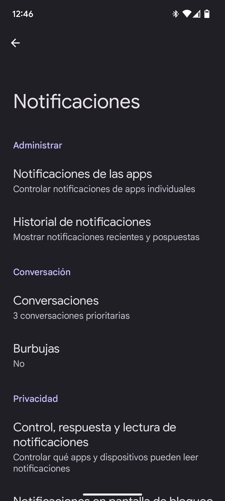 | 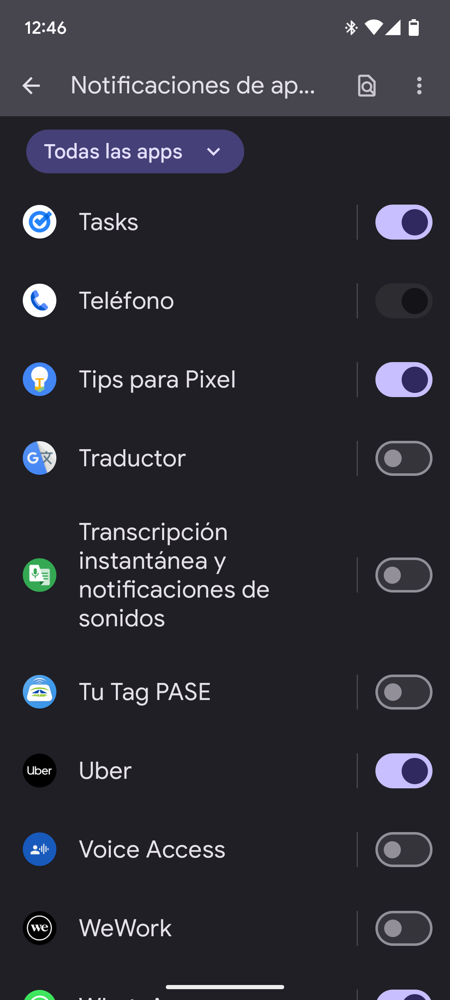 | 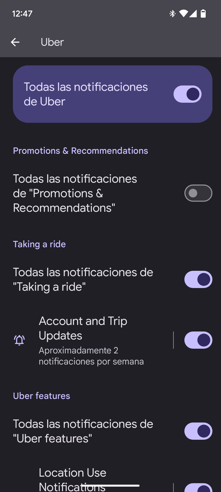 | |
|---|---|---|---|
| En las configuraciones del sistema, se encuentra la sección de notificaciones. | Dentro de las opciones de notificaciones, se puede configurar cada aplicación de forma individual, ver el historial de notificaciones y la privacidad de las notificaciones en la pantalla de bloqueo. | En la sección de notificaciones de la aplicación, se pueden desactivar por completo, o configurar que notificaciones se muestran o hacen un sonido. | Como ejemplo, para la aplicación Uber se deshabilitaron las notificaciones de "Promociones y Recomendaciones", solo dejando habilitadas las notificaciones para viajes, ya que son las que aportan valor a la aplicación cuando está en uso. |
Actualmente, no cuento con iPhone para hacer pruebas, por ello no puedo garantizar que lo mostrado en este artículo sea 100% compatible. Si están interesados en aplicar alguno de los puntos aquí tratados, el sitio web de Soporte de Apple cuenta con información útil para realizar la mayoría de estos cambios en el sistema operativo. Existen varias opciones de launchers minimalistas, la opción más recomendada por otros usuarios de iPhone es "Blank Spaces Launcher", pero siéntanse con la libertad de probar distintas aplicaciones hasta encontrar la que mejor se adapte a sus necesidades.
¡Gracias por llegar al final de este artículo! Espero que encuentren algo de valor para mejorar la experiencia que tienen con su teléfono y, por consiguiente, su vida digital.
Escrito con amor, gran pasión por la tecnología y como forma de aportar un granito de arena a la sociedad por David Reyes, Ingeniero en Sistemas.